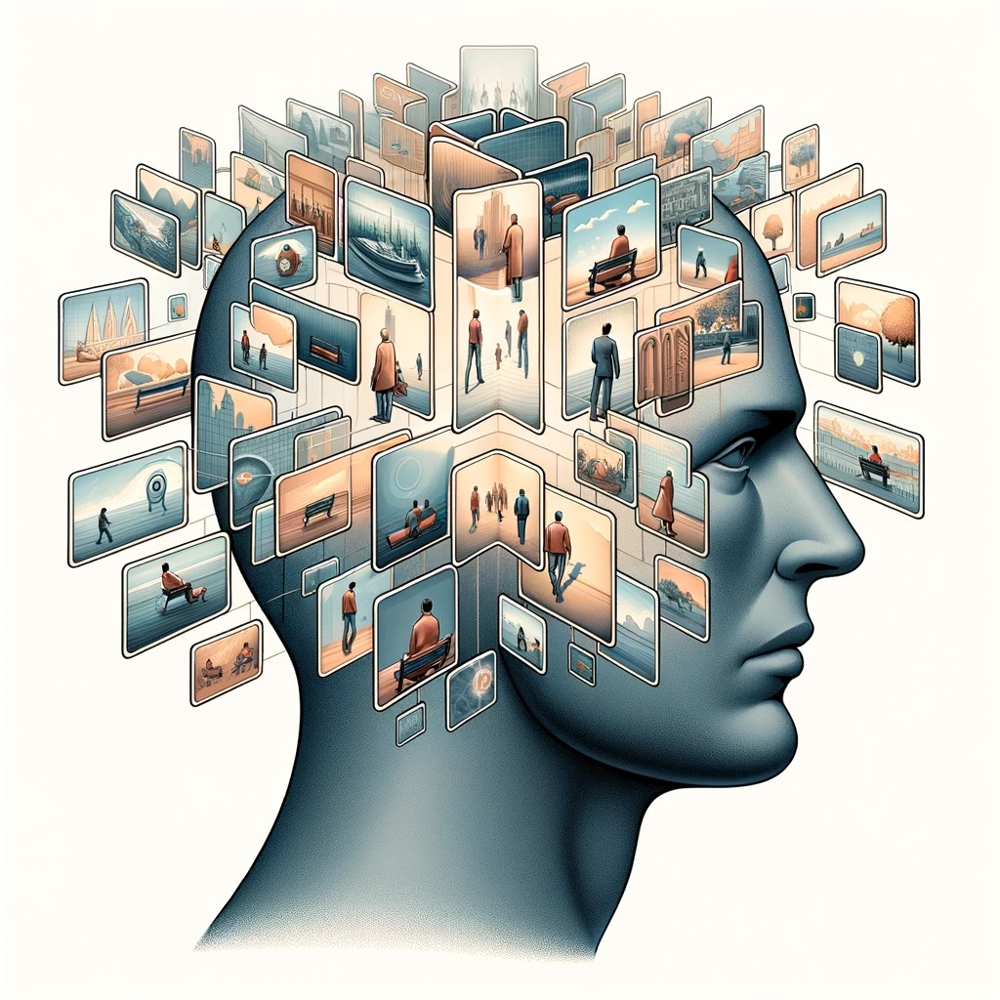
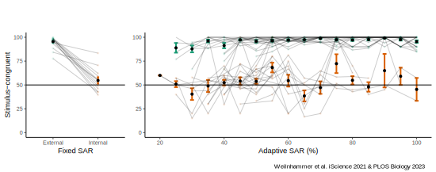
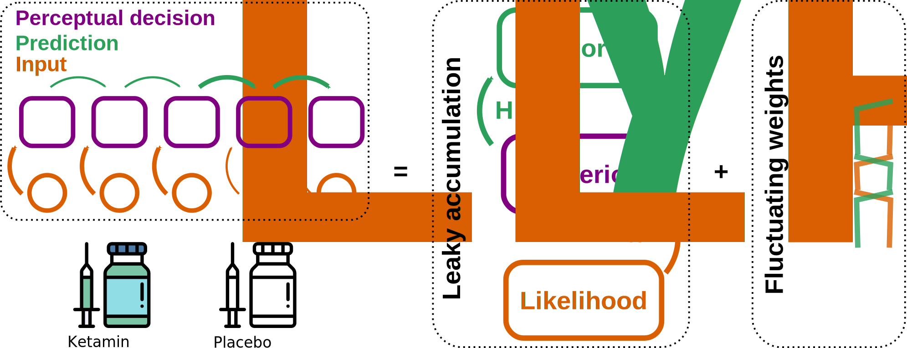
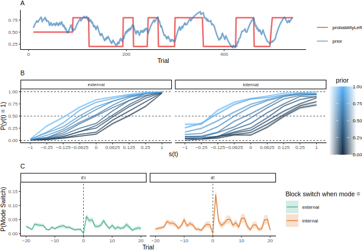

External and internal modes of sensory processing
Veith Weilnhammer, MD/PhD
Helen Wills Neuroscience Institute, UC Berkeley
Department of Psychiatry, Charité Berlin
2 Questions
- How are unambiguous conscious experiences generated from ambiguous sensory information?
- What causes psychotic experiences such as hallucinations?

Perception balances sensitivity to change with stability against noise.Graded Ambiguity

Serial Dependencies

- Stimulus- and history-congruence are autocorrelated.
Serial Dependencies

- Internally-biased processing suppresses stimulus sensitivity.
Perceptual Modes

- Are between-mode fluctuations a general phenomenon in perceptual decision-making?
Confidence Database

- 4500 humans, 22 million choices
Confidence Database

- Quadratic relationship to RTs and confidence
IBL Database

- 165 mice, 1.5 million choices
Bimodal inference

- Leaky accumulation of evidence + fluctuating weights
- Alternatives: GLM-HMM (Ashwood et al. Nat. Neuroscience 2022), Psytrack (Roy et al. Neuron 2024), Semi-HMM (Bruins et al. BioRxiv 2023)
- NMDAR-dependent changes in bimodal inference explain psychotic experiences
Bimodal inference

- NMDARs control the ratio of neural excitation and inhibition (E/I), inhibit the release of midbrain dopamine, enable cortical feedback and support synaptic STP
- Impaired NMDAR activity mimics the symptoms experienced by Scz patients, who express fewer cortical NMDARs
Next Questions
- Computational function of between-mode fluctuations
- Neural correlates of internal and external modes
- The role of neuromodulators in between-mode fluctuations
Brain-wide map data

Behavior and Function

- Between-mode flucutations as a solution to credit-assigment problems in recurrent neural networks
- Correlation to psychosis-proneness in humans
Neural Correlates

- Mechanisms: Mode ~ low-frequency LFP, noise correlations, spontaneous neural firing
- Neuroanatomy: Feature-selective regions in visual cortex, inferior frontal cortex
Nueromodulators
- Mode ~ Activity of 5-HT2A(↑), D2(↑), M1/M4(↓)
- Explanation for association of bimodal inference with psychotic experiences
Thanks a lot for your attention!
References
Weilnhammer, Stuke, Hesselmann, Sterzer, Schmack. A Predictive Coding Account of Bistable Perception. PLOS Computational Biology 2017.
Weilnhammer, Lukas, Eckert, Stuke, Heinz, Sterzer. Psychotic Experiences in Schizophrenia and Sensitivity to Sensory Evidence. Schizophrenia Bulletin 2020.
Weilnhammer, Fritsch, Chikermane, Eckert, Kathak, Stuke, Sterzer. An Active Role of Inferior Frontal Cortex in Conscious Experience. Current Biology 2021.
Weilnhammer, Chikermane, Sterzer. Bistable perception alternates between internal and external modes of sensory processing. iScience 2021.
Weilnhammer, Stuke, Standvoß, Sterzer. Sensory processing in humans and mice fluctuates between external and internal modes. PLOS Biology 2023.